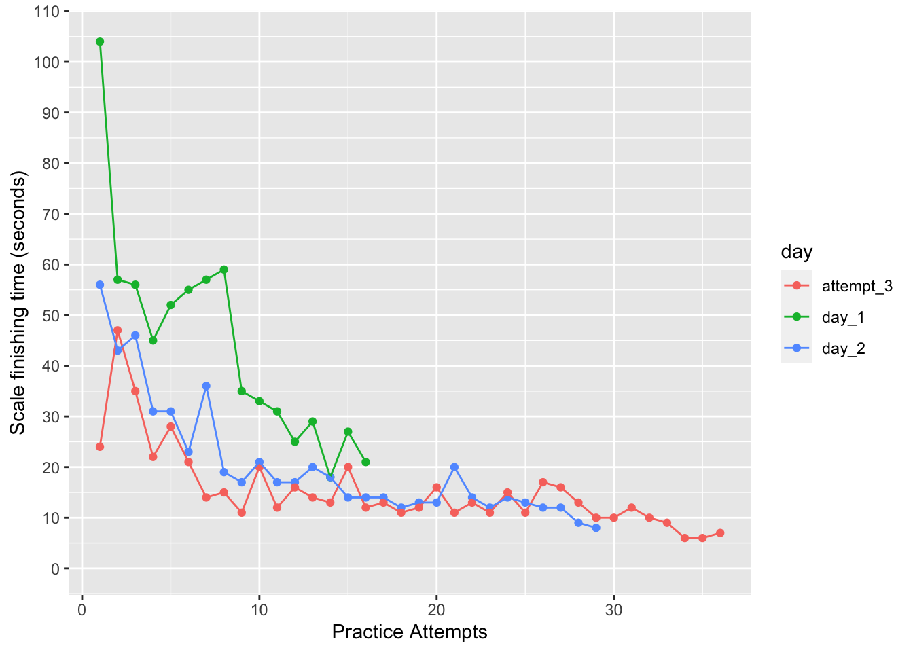
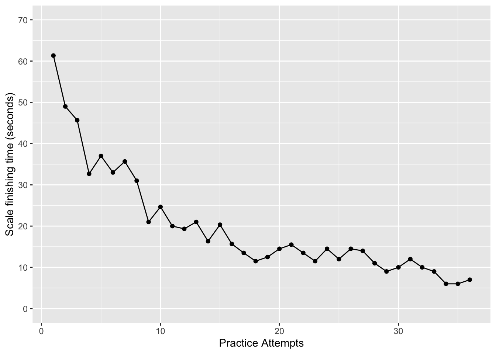
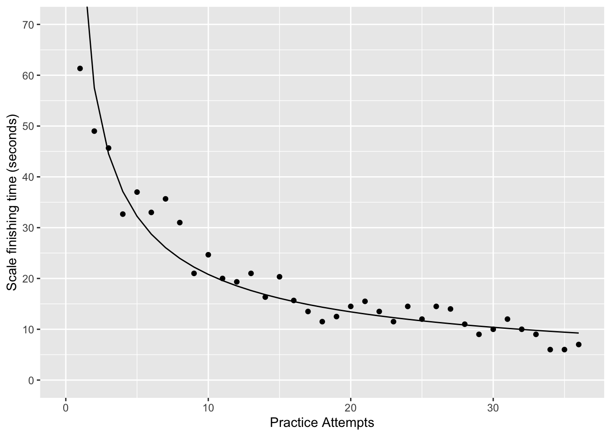
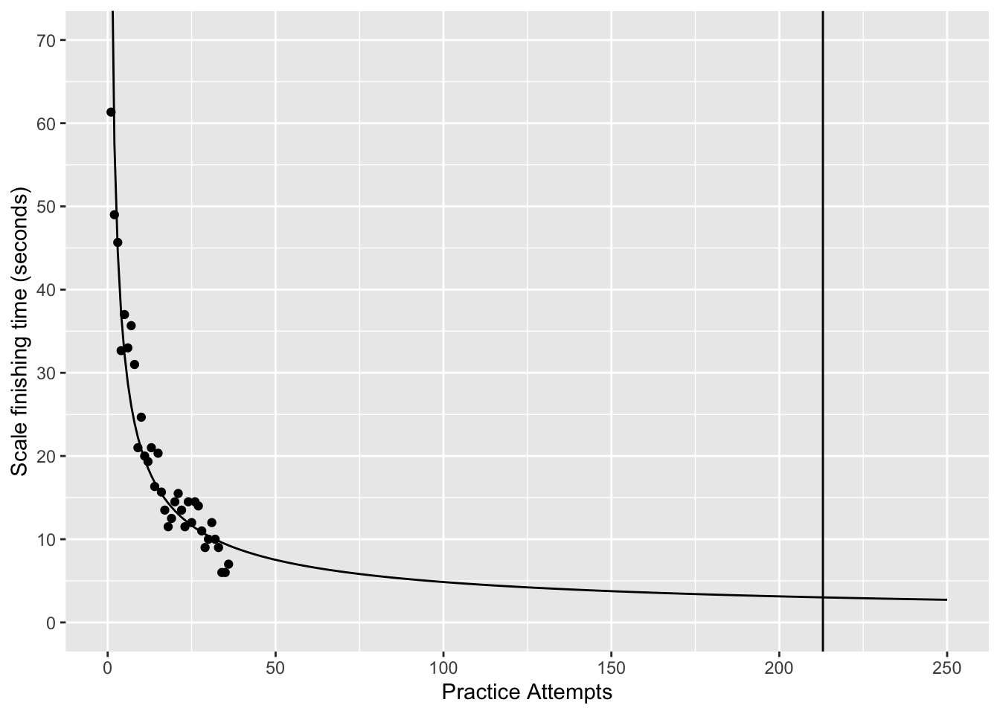

Estimating practice time needed, and a bit on contextual interference
practice
cogsci
contextual interference
estimating practice time
practice schedules
Estimating how long I need to practice a scale with my own learning curve, and questioning how much to mix up practice.

Repeating practice in a key vs. alternating practice across keys
I’ve been having so much fun making time for more music. I so needed this.
As my next semester at Brooklyn College is about to begin next week, I’m hoping I can keep up some of this momentum. Coincidentally, this semester I am planning to turn some of my research program in cognitive psychology towards aspects of music cognition, and I ended up posting about that a little bit on my main research blog yesterday. The research won’t necessarily mean playing more music, but it should at least keep me on my fingers, so to speak.
Today’s post continues in the spirit of intermingling my interests in cognition and piano practice.
Recap
Over the past few posts I’ve been focusing on getting command of the maj6 diminished scale in the key of B. I measured my improvement with practice and found a few things were happening. When I sit down to play the scale (I’m playing it as a series of chords ascending), there is a big start-up cost. On the first go round it took me 104 seconds to play the scale. Then a day later only about 60 seconds. Last night I started up at about 20 seconds. For each practice set, I also continued to produce the scale for 10 minutes, by playing it over and over, in what I might term massed repetitive practice. Within each practice set, my scale completion times decreased with each attempt. I usually got down to about 10 seconds to complete the scale. Still pretty slow, but making progress.
I can play the 7th chords of a regular major scale in C in about 3 seconds, from a cold start. So, I’m using 3 seconds as a rough achievement criterion. If I can get my B maj6 diminished scale to 3 seconds, then I’ll have achieved that somewhat arbitrary criterion. And, then I would literally be confident that I could play it in my sleep. I was trying to play it going to sleep in my head last night, and it is still slow to visualize.
I am definitely hitting a floor right now at about 10 seconds, and there could be several problems that I need to sort out. I don’t often play in B, and it might be one of my weakest keys over all. Sometimes I get confused about whether I should be playing an E or F (yikes). The maj6 diminished scales adds a b6, and sometimes I get confused about that note (G). I don’t know why I sometimes want to play A. I conceptually know the correct chords and fingerings, but can’t execute everytime, especially with speed. So, in cognitive psychology terms, I am running up against the speed-accuracy tradeoff. I can go slow and accurate, but errors creep in approaching 10 seconds, and then they really popoff if I push past faster.
If I limit my musical goals to getting this one scale down, then I have so many questions about how to go about doing that. Overall, it is clear that I need to practice, practice, practice, and I will meet my fluency criterion eventually. But, there are lots of things to practice. I could practice the chords ascending only, which is how I’m measuring my performance. I could practice up and down, or arpeggios, and all sorts of other stuff. I could practice other scales. I could practice in lentghy repetitive sessions, or takes lots of breaks and practice every other day, or longer. Infinite practice variations here.
Almost done with the recap. All of the above is about to connect to a phenomena in cognitive psychology called contextual interference. This phenomena shows that repeatedly practicing a motor sequence versus alternating practice between different motor sequences, can have notable consequences for learning, performance, and retention. And, I’d like to explore that with my own practice this morning.
But, because I am full of tangents, I need to attempt an answer to a burning question first.
How many practice attempts do I need to get my B maj6 diminished scale under 3 seconds?
Estimating how much practice I need with my own practice curve
This graph shows my learning curves for three different sets of practice attempts. I start producing the scale slowly, and then as I repeatedly attempt the scale, I pick up speed until I get down to about 10 seconds.
What I can do next is take an average of these three learning curves, which looks like this:

There is debate in the cognitive science literature about the functional form of this curve. Maybe it’s a power function, maybe it’s an exponential function. They are both pretty similar looking. Here’s what a power function fit looks like:
Call:
lm(formula = log(mean_ft) ~ log(sets), data = df_avg)
Residuals:
Min 1Q Median 3Q Max
-0.46986 -0.09867 0.01724 0.16628 0.31374
Coefficients:
Estimate Std. Error t value Pr(>|t|)
(Intercept) 4.49031 0.10817 41.51 <2e-16 ***
log(sets) -0.63201 0.03874 -16.32 <2e-16 ***
---
Signif. codes: 0 '***' 0.001 '**' 0.01 '*' 0.05 '.' 0.1 ' ' 1
Residual standard error: 0.1983 on 34 degrees of freedom
Multiple R-squared: 0.8867, Adjusted R-squared: 0.8834
F-statistic: 266.2 on 1 and 34 DF, p-value: < 2.2e-16
Looks pretty good to me, the line is going right through dots. So, the line can represent a kind of average practice curve. The neat thing is that I can keep drawing the line out following the power function. This allows me to use my existing data to make a prediction about how many practice attempts I need to get down to 3 seconds.

So, according to the limited data that I collected, I should be able to get down to 3 seconds in 219 practice attempts. If I add up all of the scale completion times from 1 to 219 (that are implied by this curve), then it will take 1568 seconds to get there, or 26 minutes of repeated practice.
Wow, that surprises me actually, I thought it would take longer. And, this is only an estimate, it could be way off in either direction. For example, I’ve already practiced a total of 30 minutes, over 3 sets of 10 minutes. Maybe I should have tried 26 minutes the first time and just got it over with!
TBH I kind of want to go try this for 26 minutes as see what happens. Maybe I will set that aside as something I do later and report back. Instead, I will continue with the goal of this post.
Contextual interference and mixed vs random practice
Shea, J. B., & Morgan, R. L. (1979). Contextual interference effects on the acquisition, retention, and transfer of a motor skill. Journal of Experimental psychology: Human Learning and memory, 5(2), 179.
The above paper showed a curious effect possibly relevant to practicing music.

Shea & Morgan had people practice sequences of motor movements on an unfamiliar device. The device is shown in the margin.
On each practice trial, one of the stimulus lights would turn on. The light indicated one of three movement sequences to perform. For example, one of the movement sequences was to grab the tennis ball in the middle, then strike down the gates in a particular order:
- right rear, left middle, right front
- right front, left middle, right rear
- left front, right middle, left rear
This is abstractly similar to learning to play a series of notes on a strange instrument.
The important manipulation in their experiment involved whether or not people repeatedly practiced a sequence, or had to randomly alternate between sequences.
One group received “blocked” practice training. They got practice on each of the three sequences. Each sequence was performed 18 times in a row. So, each sequence was grouped into a “block” of 18 practice attempts. This group got to practice a sequence repeatedly until they ran out of attempts, and then they moved onto the next sequence and practiced it on repeat.
The other group received “random” practice training. They practiced each sequence 18 times overall, but the order was totally randomized by the stimulus lights. This involves many more switches between sequences during practice. Let’s take a look at the data from the study:

The y-axis shows total time in seconds, which measures how fast people were able to produce a sequence. In the acquisition phase (when they were practicing the sequences), both groups got faster with practice. The random group started out the slowest, and made large gains with practice, but they didn’t end up as fast as the blocked group. The blocked group started out pretty fast, made smaller gains with practice, but ended up the fastest.
+1 for blocked practice right?
Not so fast. Shea & Morgan also included a retention test. Some subjects waited 10 minutes after the acquisition before attempting the sequences again, others waited 10 whole days before producing the sequence again.
The retention graph has several things going on here. I should also mention that the type retention test was counterbalanced. Some participants who received blocked training also received a blocked version of the retention test, but others received a random version of the retention test; and vice versa for the random group.
The basic pattern shown in the retention graph is that participants who received random practice retained the more than the participants who received blocked practice. This seems almost paradoxical. The blocked practice group “learned the most”, or “performed the best” during acquisition, but they also forgot the most when trying to redo the sequences later on. The random group appeared to have inferior learning, but they retained what they learned much better than the blocked group, and they even performed better on the retention test than the best scores from the block group.
Are there implications of this result for music training? A quick search on google scholar shows several papers looking at blocked vs random practice schedules in music learning contexts. I haven’t had time to read them yet, but I assume there are positive findings showing some influence of blocking or randomly varying practice on learning musical skills. In general, this phenomena has been demonstrated across a fairly wide range of tasks, so I would expect it to generalize to motor skills on piano.
I need to interrupt this post. I had ambitions to try blocked vs random practice myself, and I was going to do it. But, then I thought more about how I would do it so that I can measure my performance times, as well as how would I randomly tell myself what scales to play…and, then I realized I had to do something else first.
Begin the process of building computational assessment methods. Should be fun. This semester I have some plans to get more serious about this using MIDI and jspsych.
For now, I’m going to try something as simple as possible. The basic idea is to be able to have my ipad present a target stimulus for practice, like “A major triad”, or “c major scale”, or “C7 chord”, or whatever I want. I’ll set my ipad up on the piano, wait for the stimulus, and the try to play it as fast as possible. I’ll also add a little button on the screen to press when I finish playing the target stimulus. This will be really hacky from a cogsci perspective, but I’ll improve the precision later. For now, this will work to collect some rough personal data on my progress learning the maj6 diminished scale.
Time to roll up the javascript programming sleeves.